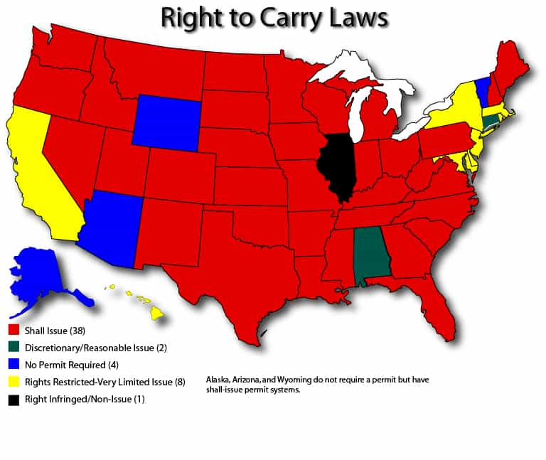
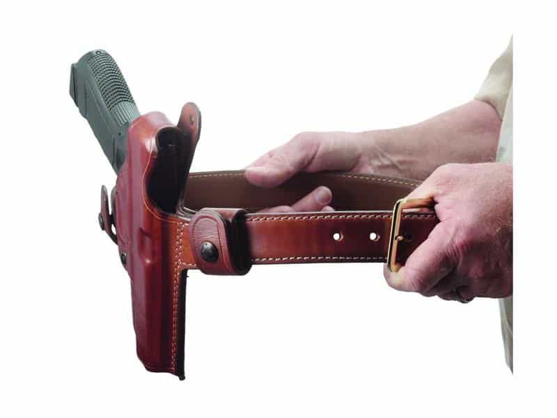
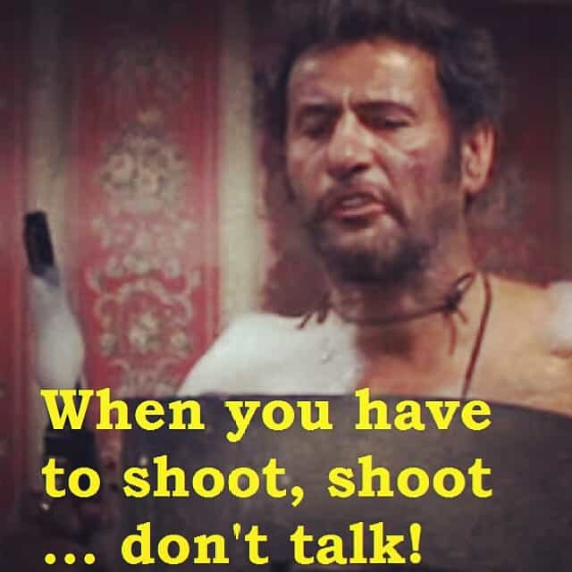
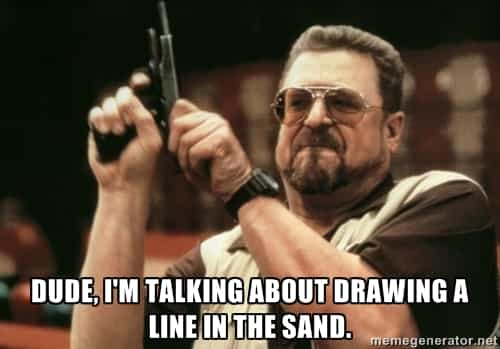

Luke Stranahan is an engineer by trade and an armed patriot by inclination. He writes for Return of Kings as a leisure pursuit and an attempt to do his part to help reverse the slide into moral decrepitude of modern society. Follow him on Twitter.


Carrying a handgun for personal defense is a massive responsibility and often an onerous task, but it certainly beats not being armed when you need to be. The goal, during your life, should not be to win a gunfight, but rather to never be in one. More than just with the mechanics of packing a gun, this is done via the right mindset, and the cornerstone of that mindset is confidence; confidence in you, your gun, and your surroundings.
As was said in the previous article, you absolutely must know the laws in your jurisdiction, and you must know them better than the local police, who can be quite wrong on any given law, and don’t mind lying to you about it, either. Handgunlaw.us and USA Carry are good online resources to look up your state.
A big part of confidence is knowing that you are right in all that you do. A righteous man can be at peace with himself because he is right and others are wrong. Carrying a gun is still not highly thought of in our disarmed, pacifistic society, so knowing and obeying the law to a precise degree will nullify any difficulty you would have with the police, allowing you to concentrate on criminal threats, as you should.
One of the essential traits of being a country that is still a conglomeration of states (although ever increasingly Federalized) is that not all states are equal, and this applies to carrying weapons. You must know where your state’s permit is honored, and where it is not. You must know about any differences in the rules of your home state versus your destination. You must know all relevant rules of any states between you and your destination, as well as city specific rules.

An example of this is that I know I can go to Indiana, Kentucky, and Ohio without any real changes to my concealed carry routine, but I have to modify it to go to Illinois and put the piece in a car console or a purpose specific case and not carry it on my person, as my carry permit is not valid there. This sucks, but it’s better than the “it must be unloaded and not accessible from the driver’s seat” that it used to be.
You must know where you can go in any given state with a concealed weapon. Big points of contention are things like bars versus restaurants, government owned facilities, and large crowd events. A typical rule is that you cannot carry in a bar, or the section of a tavern that is a bar, but the restaurant portion is ok.
The easiest rule on a government building is that you know they disapprove of the Constitution (at least this part) when they have metal detectors, but, even if they don’t, you might still be boned. For instance, the Post Office bans firearms, and I’ve never seen a metal detector there. Schools are pretty much always a no-go.
Large gatherings can cause problems as well. While private security cannot arrest you, they can physically disarm you, and you’ll never get the gun back, in all odds. Also, if it’s illegal to carry in a “civic event,” the rent-a-cops will call over the one or two real cops, and now you’re arrested.

Lastly, there is something called “duty to inform.” If you are unlucky enough to have to deal with a law enforcement officer while about your daily travels, you may have to, by law, say that you are carrying. At a minimum, you’ll be disarmed for the duration of the encounter, you may well annoy him by exercising your Constitutional rights, and you may even be arrested, depending on his understanding of the law, intellect, and general mood that day. While not all police are jerks, enough of them are that it is sound advice to avoid contact unless YOU need them, and that goes double for you while carrying.
All of this must be learned BEFORE you go somewhere! Do your homework, or you could find yourself stuck approaching, or already in, a “gun free zone” while packing heat. Legal or not, right or not, un-American or not, that now makes you the bad guy and subject to arrest. If you find yourself in such a situation, leave the area. If you must go back, throw away your ammo, go to a UPS or FedEx store, and mail the gun to your local Federal Firearms License (FFL) holding dealer. Call him and you may need to pay him his transfer fee, and maybe even have the gun transferred back to you that you already own, but it beats getting arrested. Do not do the thug life method of just throwing the gun in the trash, either.
One of the more common mistakes is “now I have a gun, I’m good to go.” The pistol is just the beginning, and it’s not really even the beginning; it’s just a part of it all, both physically and mentally. You need to have gear that works for you, and that you’ve proven to yourself that it works.

You need to have a good holster, a good belt to hold it with (usually heavier than a normal belt), a holder for magazines or speedloaders, and you need to make sure it fits well. Pistols are heavy and they’re noticeable when they aren’t supported well enough. If your gear doesn’t work well, you’re not going to use it much and when you do, you’re going to attract attention to yourself by hitching up your pants a lot or patting the area of the gun.
People don’t notice a confident person with a concealed gun, and they usually don’t even notice a confident person with an exposed gun, but they WILL notice a nervous person who is nervous for no apparent reason. They will then scope you out and figure out you have a gun that you’re not comfortable with, and maybe call the law on you.

3 yards, 3 shots, 3 seconds. Some statistic on gun fights. Yes, this close. Drawing, presenting, firing, changing mags, firing, scanning, reholstering. Go.
This means you need to do a few things. You MUST train, maybe with some classes, but definitely by yourself, on the range, and at home. You MUST practice drawing, mag changes, threat scanning, rapid-close firing, and firing at range, and firing from cover and moving to cover. The bad news is that some ranges don’t allow all that stuff, and you should find one that does. The good news is everything but actual firing can be practiced at home (with the ammo in another room.) Future articles will cover good drills.
You may need multiple guns for multiple activities. My friend’s wife runs, and she bought a little holdout pistol and a fanny pack for it, but I doubt she’s practiced drawing at all. You will fail your training under stress and then you’ll lose. Practice with anything you’ll be carrying.
Printing.
In addition to being confident in your gear and training, you must be confident in your clothing. States have different laws on what concealment is, whether or not open carry is ok, whether or not you can occasionally expose the gun, and whether or not the outline of the gun, called “printing” can be visible or not. My home state is open carry, however, your state may vary, and you may need to change your clothing style to accommodate your firearm to be legal.
Legalities aside, you need to be discreet. If you are open carrying, or even badly concealed carrying, you just told the local bad guy that you’re his first target, and you also have a gun that he can use on other people. I don’t believe in warning people that you have a gun; if it’s time to use it, use it.

You should never start a fight, or be drawn into one, whether you carry or not. If you’re in a bar, get into an argument, and he goes to “get mah piece” from his truck, you need to run out the back door, even if you have a gun yourself. Any gunfight you are not in is a gunfight you won. There are very few things that need to be won with a gun, and silly arguments are not among them.
No guns and drinking, even with little 22 conversions like this one.
Don’t speed, don’t disturb the peace, and don’t drink. States have various laws on drinking while carrying, but it’s a loss two ways regardless. Alcohol makes you less inhibited, so you’re more likely to get into an altercation, and you’re more likely to be found guilty if the jury knows you’ve been drinking at all. You should not be getting drunk to the point of affecting your judgment at any place that is unsafe enough to be carrying in the first place, which means you should be saving your partying for at home.
Lastly, people who are new to carrying think, “oh, I need to make sure to take my gun with me since I’m going THERE.” Why are you going someplace that you’ll think you need a gun once you get there? Firearms are for the unforeseen problems that crop up despite your best efforts to avoid them. Going to sketchy places, at sketchy times, and dealing with sketchy people does not call for you going there with a gun, it calls for either not going at all, or bringing friends with their own guns.
The most important thing is to be confident in your awareness. Violent encounters happen FAST, and if you get surprised by people that you did not see coming, that is where you screwed up. The greatest weapon you have is not your pistol, but your ability to see trouble and avert it.
Colonel Jeff Cooper’s Color Codes for Awareness. You should travel around in yellow. Orange means it’s time to put your hand on your gun and leave the area.
Most importantly, you must be confident in what you believe is right. This is different than what is legal. Some people believe that it is better to be mugged than to kill the mugger, or be raped over killing the rapist, or just to give the home invaders what they want and they’ll go away. Others do not believe those things.

You must decide, as you start to carry, under what grounds are you personally decided to kill someone. There can be no hesitation, as the only worse thing to do other than be caught unarmed by violence is to pull a gun and not use it. Shoot to stop the threat, and shoot enough times to make sure it is stopped.
If you do get into a gunfight, once you’ve made sure you are safe, you need to call the police and establish yourself as the victim and then lawyer up fast. There is a school of thought that says to leave the area if you can’t be tied to the shooting in any way, but I can’t endorse a criminal act personally. I do know that it would be hard to live with running from such a thing, but it’s also hard to trust the police to do the right thing these days, especially if SJWs get involved.
Carrying a gun is not something that is done once you’ve purchased the gun and walked around with it a couple times. You must stay within the law, you must carry discretely and securely, you must train so you can use it effectively, you must not go places and do things that would bring unneeded violence upon you, and you must know where your personal line in the sand is and be ready to defend it.
The gun is simply a tool; your will is the weapon. Once you understand that the gun is only part of your defense and realize that security at home, unarmed combat, general fitness, staying safe, and situational awareness all play as big a part as the gun does, you will have made progress towards carrying confidently.
Read More: A Beginner’s Guide To Carrying A Handgun.